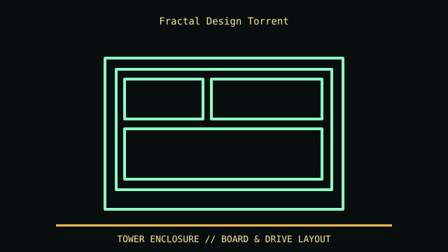

[ MODEL IDENTIFICATION // FRACTAL DESIGN TORRENT AIRFLOW TOWER ]
Fractal Design Torrent
544 × 242 × 530 mm (H × W × D); GPU clearance is up to 461 mm without front fans or 423 mm with the 180 mm front fans installed; CPU cooler height up to 188 mm.

REVISION CAVEAT: Torrent, Torrent Compact, Torrent Nano and Torrent XL have different shells and fit limits; verify model/SKU and included fan/drive brackets.
Specifications & fit
| Catalog subcategory | Tower and legacy desktop cases |
|---|---|
| Model / generation | Fractal Design Torrent airflow tower |
| Dimensions / form factor / clearance | 544 × 242 × 530 mm (H × W × D); GPU clearance is up to 461 mm without front fans or 423 mm with the 180 mm front fans installed; CPU cooler height up to 188 mm. |
| Drive bays | Two dedicated 3.5-inch positions and four dedicated 2.5-inch positions; no 5.25-inch bay. Confirm tray/accessory contents for the exact Torrent variant. |
| Compatibility | E-ATX/ATX/microATX/Mini-ITX board support; check PSU shroud, bottom fan and GPU thickness together. |
| Revision identification | Torrent, Torrent Compact, Torrent Nano and Torrent XL have different shells and fit limits; verify model/SKU and included fan/drive brackets. |
Compatibility & preservation notes
E-ATX/ATX/microATX/Mini-ITX board support; check PSU shroud, bottom fan and GPU thickness together.
Retain proprietary large front fans, fan hub and dust filters. Confirm GPU cabling and bottom intake clearance before placing on carpet.
- Record the complete model/SKU, serial/date label, board and bay/backplane identifiers, accessories and manual revision before disassembly.
- For tower cases, measure the installed board width, drive cage, radiator/fan stack, GPU and PSU cable bend as one build; the advertised maximums may compete.
- Keep original brackets, fasteners, trays, feet and front-panel parts labeled with the chassis. Do not force components into modified or incomplete specimens.
Manufacturer, archive & standards sources
- Fractal Design — Torrent specificationsPrimary manufacturer or technical-reference source for this named model; use the exact SKU/document revision.
- Intel — Desktop board form factorsAdditional manufacturer, archival, or dimensional reference. Options and specimen condition can change fit.
Approximate or convention-dependent dimensions are marked as such. Measure the individual unit for restoration, shipping and installation.